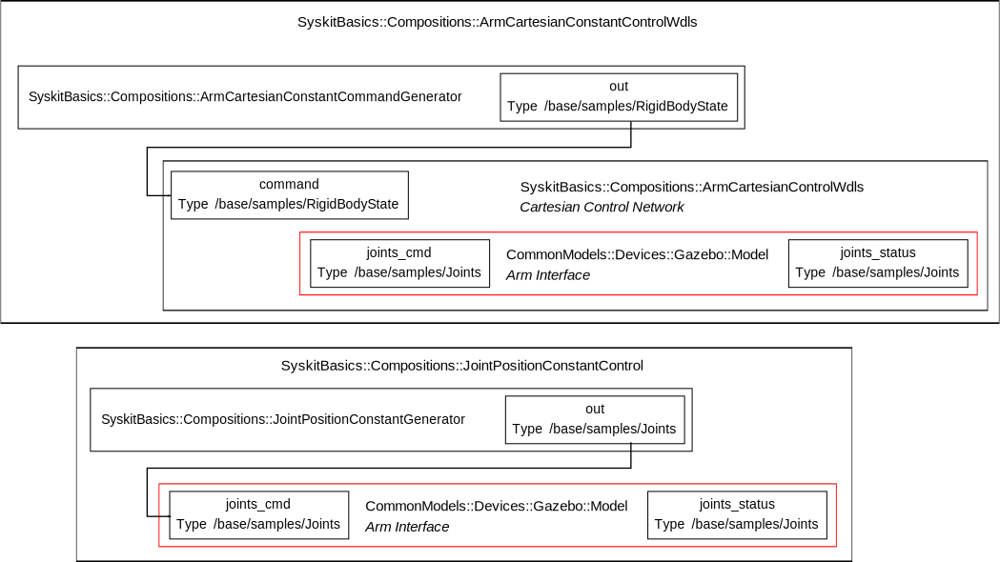
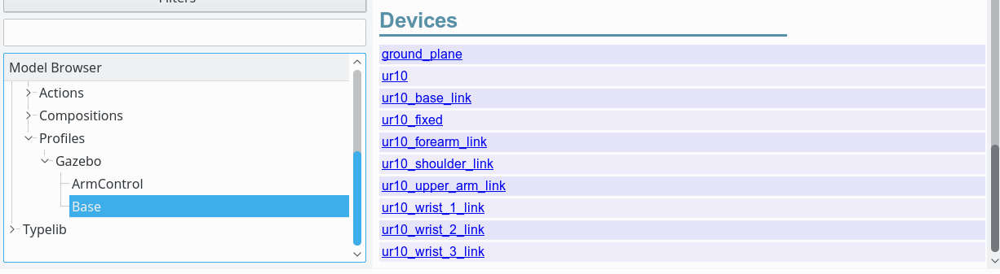
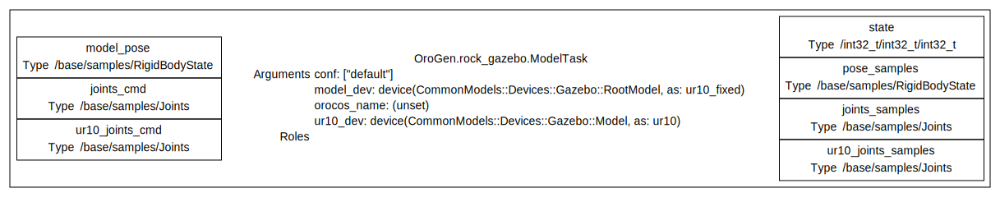
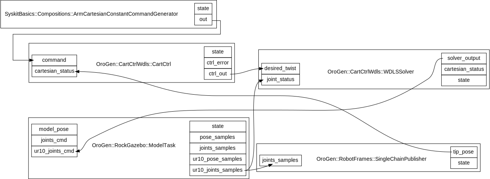

Profiles and Devices
Where are we ? So far, we have a control composition. But as we noticed when we created the arm control network, it is not using a real component as the arm, only a device model. This page will be talking about devices, and telling how one replaces the device model by something that can be run.
There are no pages in blue this time … the purpose of this page will be to replace the Model device (in red) by the actual device … but first to learn about devices themselves.

One can partition a component network into three categories:
- source of data
- sinks of data
- transformation of data
Within a robotic system, the source and sinks of data are the sensors and actuators of the robot itself. What makes them unique when building the system's component network is that they are indeed unique.
While the data processing components can easily be duplicated - an image preprocessing component can be instantiated multiple times to process multiple streams of data - one cannot duplicate devices. They are bound to hardware, and we still don't know how to grow new devices on the robot on-demand.
This difference shows up in the Syskit modelling system. Devices are defined separately within a robot interface. We will now see how this is done, and how we can use these devices within our arm control network, binding the simulated arm with the control network.
Defining devices for the Gazebo system
A robot definition is created within a Syskit profile. Profiles are the models
that bind network definitions (compositions) with devices and other
compositions. It's also where the robot definition happens.
By convention, one usually creates a per-robot Base profile that
contains the robot definition. Let's do that now.
$ syskit gen profile gazebo/base
create models/profiles/gazebo
create models/profiles/gazebo/base.rb
create test/profiles/gazebo
create test/profiles/gazebo/test_base.rb
Note how the addition of -rgazebo to the command line ensured that the model
is generated within the gazebo/ subdirectory of the profiles/ folder and
within the Gazebo namespace of Profiles. This is a general convention (e.g.
compositions specific to our gazebo robot would be in compositions/gazebo/ and
within the Compositions::Gazebo namespace.
Now, here's the catch: we will actually not really learn to define devices, since
the mapping from the simulation model to devices is done automatically from the
robot model. One only has to declare the robot model in the Base profile we
just created:
module SyskitBasics
module Profiles
module Gazebo
profile 'Base' do
use_gazebo_model 'model://ur10',
prefix_device_with_name: true
use_sdf_world
end
end
end
end
Note the prefix_device_with_name argument is here for backward
compatibility reasons. Syskit will issue a deprecation warning if you forget
it.
And have a look at the generated devices with syskit ide -rgazebo models/profiles/gazebo/base.rb:

One can see that there is one device definition per link in the model, and one for the model itself. Let's click on the model and have a look at the Dataflow section. Enable both "Show all ports" and "Show task info" to get port information .

Injecting the device into the arm control network
As said, profiles is where this kind of injection is done. But let's keep Base
for really low-level stuff like devices. Let's create an ArmControl profile to
integrate the arm control stuff.
syskit gen profile gazebo/arm_control
We need to require the Base profile and ArmCartesianControlWdls composition
definition. Then, define the cartesian and joint position controls for our
UR10 robot in gazebo by injecting the UR10 device as the 'arm' child of the
composition.
The model name given to define in a profile is made out of a demeter
chain. In Ruby, this is usually
done by breaking each method call with a newline, leaving a trailing dot on the
previous line. Don't forget these dots !
require 'syskit_basics/models/profiles/gazebo/base'
require 'syskit_basics/models/compositions/arm_cartesian_constant_control_wdls'
require 'syskit_basics/models/compositions/joint_position_constant_control'
module SyskitBasics
module Profiles
module Gazebo
profile 'ArmControl' do
define 'arm_cartesian_constant_control',
Compositions::ArmCartesianConstantControlWdls.
use(Base.ur10_dev)
define 'arm_joint_position_constant_control',
Compositions::JointPositionConstantControl.
use(Base.ur10_dev)
end
end
end
end
As we mentioned when we defined it,
the joint position constant control has been defined with the goal of providing a sane default
position. Let's make sure this is available easily by creating a definition with a default
setpoint. This will reuse the arm_joint_position_constant_control definition, which is accessed
with the _def suffix. Usable joint positions can be found using the rock-roboviz tool:
$ rock-roboviz model://ur10
require 'syskit_basics/models/profiles/gazebo/base'
require 'syskit_basics/models/compositions/arm_cartesian_constant_control_wdls'
require 'syskit_basics/models/compositions/joint_position_constant_control'
module SyskitBasics
module Profiles
module Gazebo
UR10_SAFE_POSITION = Hash[
'ur10::shoulder_pan' => 0,
'ur10::shoulder_lift' => -Math::PI/2,
'ur10::elbow' => Math::PI/2,
'ur10::wrist_1' => 0,
'ur10::wrist_2' => 0,
'ur10::wrist_3' => 0]
profile 'ArmControl' do
define 'arm_cartesian_constant_control',
Compositions::ArmCartesianConstantControlWdls.
use(Base.ur10_dev)
define 'arm_joint_position_constant_control',
Compositions::JointPositionConstantControl.
use(Base.ur10_dev)
define 'arm_safe_position',
arm_joint_position_constant_control_def.
with_arguments(setpoint: UR10_SAFE_POSITION)
end
end
end
end
A device model is accessed using the device's name with a _dev suffix on the
profile it is defined. Here Base.ur10_dev is the ur10 device
defined on the robot definition in Base.
Note when building profiles, the require lines as well as the names of
models and roles that can be used in the use statement can easily be browsed
using the IDE
Let's have a look at the final arm_cartesian_constant_control definition.
